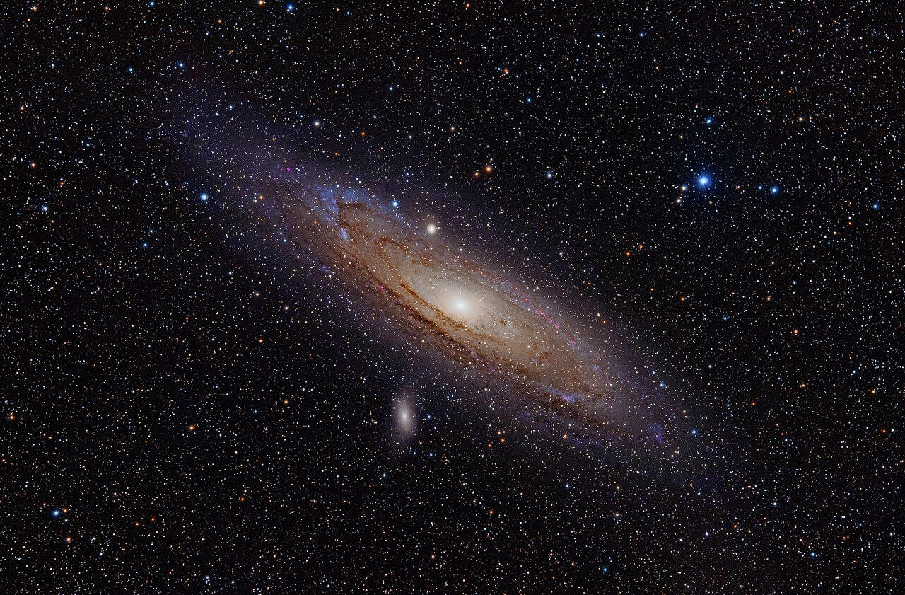
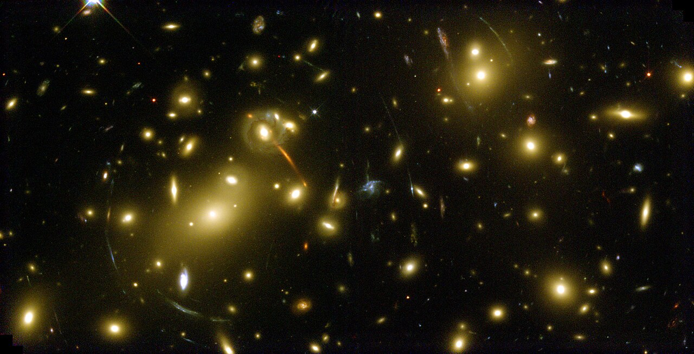
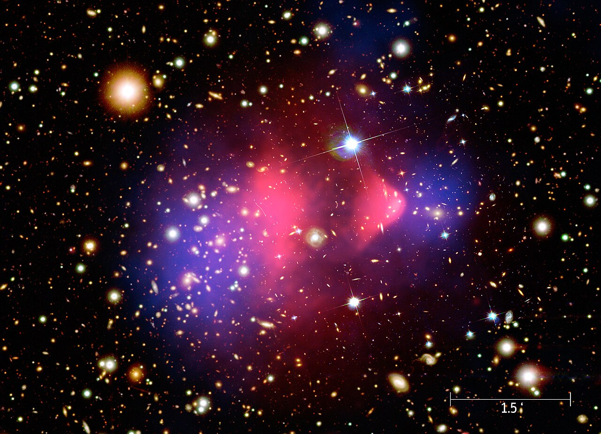

동기 유발
너무 빨리 도는 은하의 가장자리
교과서 p. 94학습 목표
- 은하의 회전 속도 곡선을 이용하여 우리은하의 질량 분포를 설명할 수 있다.
- 은하에 빛을 내지 않는 물질이 존재한다는 사실을 추론할 수 있다.

Adam Evans, CC BY 2.0
NASA, 퍼블릭 도메인
태양계에서는 바깥 행성일수록 느리게 돈다(해왕성 5 km/s, 수성 48 km/s).
그런데 1970년대 베라 루빈은 안드로메다은하의 바깥쪽 별과 가스도 안쪽만큼 빠르게 돈다는 것을 발견했다. 무엇을 뜻할까?
그런데 1970년대 베라 루빈은 안드로메다은하의 바깥쪽 별과 가스도 안쪽만큼 빠르게 돈다는 것을 발견했다. 무엇을 뜻할까?
1-03의 케플러 회전(V ∝ 1/r)을 떠올리게 한 뒤, '보이는 질량만으로는 바깥쪽 속도를 설명할 수 없다 → 보이지 않는 질량'이라는 결론까지 학생 스스로 추론하게 합니다. 운영안 3차시(회전·21 cm 1 / 회전 곡선·질량 1 / 암흑 물질·데이터 탐구 1).
핵심 개념 1
21 cm 수소선으로 은하의 회전 재기
교과서 p. 94 ~ 95(1) 우리은하의 회전과 21 cm 수소선
- 태양을 포함한 원반의 별과 가스는 은하 중심을 돈다. 태양은 약 230 km/s로 돌며, 한 바퀴에 약 2억 3천만 년(은하년)이 걸린다.
- 21 cm 수소선: 중성 수소 원자의 전자 스핀 방향이 바뀔 때 나오는 파장 21.1 cm(1420 MHz)의 전파. 티끌에 막히지 않아 은하 반대편까지 관측할 수 있다.
- 수소 구름이 은하 회전으로 움직이면 21 cm 선이 도플러 이동한다. 한 방향(은경 l)을 보면 거리가 다른 여러 구름의 선이 겹쳐 나타난다.
- 접선점 방법: 시선이 은하 중심에 가장 가까이 지나는 점(접선점)에 있는 구름이 가장 큰 시선 속도를 보인다. 그 거리 R = R₀ sin l, 회전 속도 V(R) = vr, max + V₀ sin l
시뮬레이션 1전파 망원경으로 회전 곡선 그리기 (접선점 방법)
왼쪽: 위에서 본 우리은하(모형)와 시선 방향. 가운데: 그 방향의 21 cm 스펙트럼(가로축: 시선 속도). 오른쪽: 기록한 회전 곡선. 여러 방향을 기록해 회전 곡선을 완성하자. (R₀ = 8.2 kpc, V₀ = 230 km/s)
핵심 개념 2
회전 속도 곡선과 질량 분포
교과서 p. 96세 가지 회전 모형과 실제 회전 곡선
- 강체 회전: 질량이 고르게 퍼진 원판처럼 V ∝ R. 은하 중심부가 이렇게 돈다.
- 케플러 회전: 질량이 중심에 몰려 있으면 V ∝ 1/R (태양계 행성처럼). 빛을 내는 물질은 대부분 중심부에 있으므로 은하 바깥쪽은 이렇게 돌 것으로 예상했다.
- 실제 관측: 바깥쪽에서도 회전 속도가 줄지 않고 거의 일정하다(평탄한 회전 곡선).
- 원 궤도 운동에서 반지름 R 안의 질량은 M(R) = V²R/G. V가 일정하면 M ∝ R → 별이 거의 없는 바깥쪽에도 질량이 계속 늘어난다 → 빛을 내지 않는 물질(암흑 물질)
G M(R) mR² = m V²R ⟹ M(R) = V² RG 태양 궤도 안의 질량: (230 km/s)² × 8.2 kpc / G ≈ 1.0 × 10¹¹ M☉
시뮬레이션 2회전 방식에 따라 은하는 어떻게 돌까?
처음에 한 줄로 늘어선 별들이 시간이 지나며 어떻게 휘어지는지 비교하자. 강체 회전에서는 줄이 그대로 유지되고, 나머지는 안쪽이 앞서 나가며 휘어진다.
핵심 개념 3
암흑 물질의 증거
교과서 p. 97보이지 않지만 중력으로 드러나는 물질
- 암흑 물질: 전자기파로는 관측되지 않고 중력으로만 존재가 드러나는 물질. 은하를 둘러싼 헤일로에 넓게 분포한다.
- 증거 ① 나선 은하의 평탄한 회전 곡선 (루빈, 1970년대)
- 증거 ② 은하단 속 은하들의 빠른 운동 (츠비키, 1933): 보이는 질량으로는 은하단이 흩어져야 한다.
- 증거 ③ 중력 렌즈: 은하단 뒤 은하의 빛이 휘는 정도로 잰 질량이 보이는 질량보다 훨씬 크다.
- 증거 ④ 총알 은하단: 충돌한 두 은하단에서 뜨거운 기체(X선, 보통 물질)와 중력 렌즈로 잰 질량의 위치가 서로 어긋나 있다.
- 우주 전체에서 암흑 물질은 보통 물질의 약 5배이다. 정체는 아직 밝혀지지 않았다.

NASA, A. Fruchter and the ERO Team

NASA/CXC/M. Weiss 외, 퍼블릭 도메인
데이터 탐구
NGC 3198의 회전 곡선을 모형으로 분해해 암흑 물질 찾기
탐구 개요
나선 은하 NGC 3198은 21 cm 관측으로 별이 거의 없는 바깥쪽 30 kpc까지 회전 속도를 잰, 암흑 물질 연구의 교과서 같은 은하이다. 관측된 회전 곡선을 ① 빛을 내는 원반(별+가스)의 기여와 ② 암흑 물질 헤일로의 기여로 나누는 모형을 만들고, 반지름에 따라 암흑 물질이 차지하는 비율을 구해 보자.
보이는 물질만으로원반의 질량(빛의 양 × 질량–광도비)만 조절해 관측값과 맞춰 본다. 안쪽은 맞지만 바깥쪽은?
헤일로 추가암흑 물질 헤일로의 세기(V∞)와 중심핵 크기(rc)를 조절한다. 전체 속도 V² = V원반² + V헤일로²
잔차 줄이기평균 제곱 잔차가 가장 작은 조합을 찾는다(또는 '자동 맞추기').
질량 비율각 반지름에서 M(R) = V²R/G로 전체 질량과 원반 질량을 구해, 암흑 물질 비율을 그래프로 본다.
데이터 랩NGC 3198 회전 곡선 분해
점과 오차 막대: 관측값(거리 9.4 Mpc 가정, 문헌 값을 반올림). 파랑: 원반, 보라: 헤일로, 노랑: 전체 모형.
분석 질문
1. 원반만으로 관측값을 맞추려 하면 어떤 문제가 생기는가?
안쪽(약 5 kpc 이내)을 맞추면 바깥쪽에서 모형 속도가 케플러 회전처럼 떨어져 관측값(약 150 km/s)보다 훨씬 작아진다. 바깥쪽을 맞추려고 원반 질량을 키우면 안쪽 속도가 관측값보다 너무 커진다. 원반 하나로는 둘 다 맞출 수 없다.
2. 가장 잘 맞는 모형에서 30 kpc 안의 전체 질량과 암흑 물질 비율은?
M(30 kpc) = 148² × 30 / 4.30×10⁻⁶ ≈ 1.5 × 10¹¹ M☉. 자동 맞추기 결과 원반은 약 1 ~ 2 × 10¹⁰ M☉ → 암흑 물질이 약 90%(원반 질량을 관측 속도를 넘지 않는 최대로 잡아도 약 70% 이상). 5 kpc 안에서는 원반과 암흑 물질이 비슷하지만, 바깥으로 갈수록 암흑 물질 비율이 커진다.
3. 심화 · '원반 질량을 최대로'(최대 원반) 잡아도 결론이 바뀌지 않는 까닭은?
원반의 질량–광도비는 정확히 알기 어려워 일부러 가장 크게 잡아도(안쪽 속도를 넘지 않는 한), 원반 기여는 바깥에서 1/R로 줄어든다. 따라서 바깥쪽의 평탄한 속도는 원반이 아닌 넓게 퍼진 다른 질량(헤일로)이 있어야만 설명된다. 결론이 가정에 크게 의존하지 않는다는 점이 이 증거를 강하게 만든다.
형성 평가
개념 확인 문제
그림·자료 출처
사진: NASA/CXC/STScI, NASA/ESA, Wikimedia Commons 이용자 사진. NGC 3198 회전 곡선은 Begeman(1989), van Albada 외(1985)의 21 cm 관측값을 반올림한 값이며, 원반 모형은 지수 원반(Freeman 1970)을 단순화했습니다. 21 cm 시뮬레이션의 은하는 교육용 모형입니다.